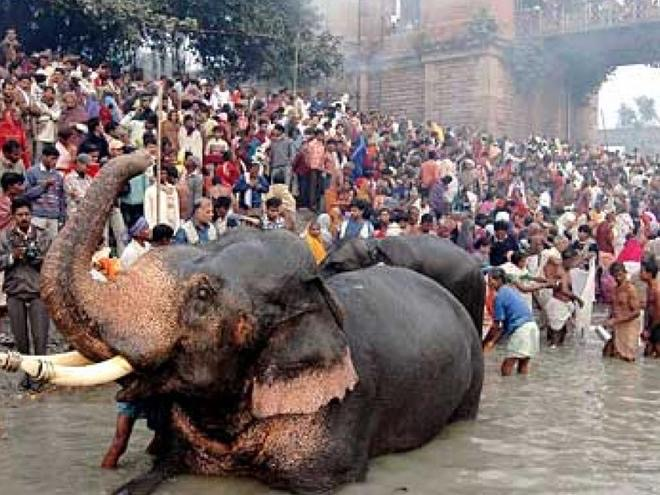
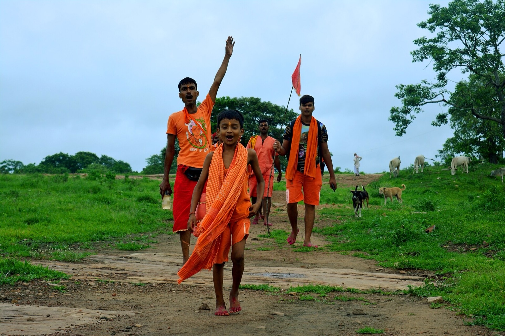
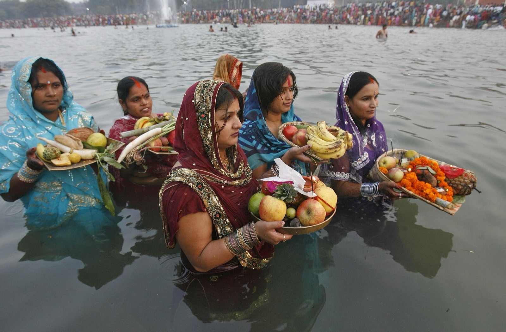
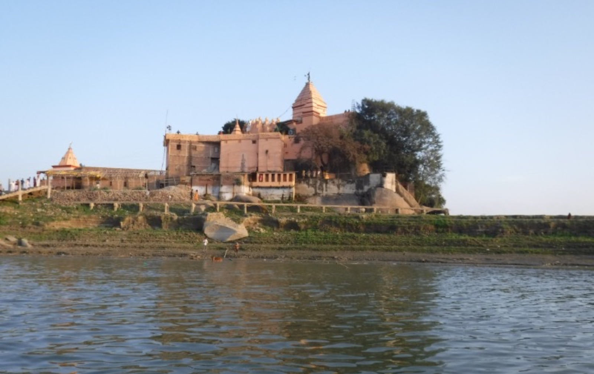

Festivals on a Bihar tourism trip
Fairs and festivals: cattle fairs at Sonepur, kanwariyas in Shravan, and Chhath on the Ganga.

Sonepur Mela
Asia's famous cattle fair at the Ganga–Gandak confluence, a highlight of the festive calendar.

Shrawani Mela
The Shravan month pilgrimage, with devotees carrying Ganga water toward Deoghar via Sultanganj.

Chhath Puja
Bihar's great river festival of the sun, observed on ghats from Patna to villages across the state.

Public gatherings
Stupas, ghats, and historic grounds that fill during fairs and holy days.